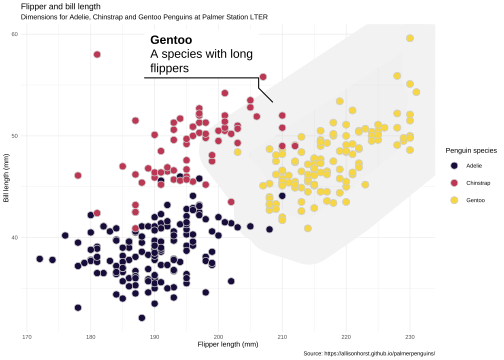

Code
```{r}
library(highcharter)
library(palmerpenguins)
hc <- hchart(
penguins,
"point",
hcaes(bill_length_mm, bill_depth_mm, group = species)
)
hc
```##: Yes, the <h1> title is of the first/main title.```{r}
library(highcharter)
library(palmerpenguins)
hc <- hchart(
penguins,
"point",
hcaes(bill_length_mm, bill_depth_mm, group = species)
)
hc
```More info in https://quarto.org/docs/authoring/article-layout.html
How to use: In the chunk specify with column argument.
#| column: pageNow, list of main column types.
.column-body
.column-body-outset
.column-page
.column-page-inset
.column-screen
.column-screen-inset
.column-screen-inset-shaded
According to https://r4ds.hadley.nz/quarto.html#sec-figures:
```{r}
library(ggplot2)
library(ggforce)
p <- ggplot(penguins, aes(x = flipper_length_mm, y = bill_length_mm)) +
# geom_smooth(aes(color = species), method = "lm") +
geom_mark_hull(
aes(filter = species == "Gentoo", label = species),
description = "A species with long flippers",
color = "gray95",
fill = "gray80",
concavity = 4,
size = 20
) +
geom_point(aes(fill = species), color = "gray80", size = 3, shape = 21) +
scale_fill_viridis_d(option = "B", begin = 0.1, end = 0.9) +
# scale_color_viridis_d(option = "B", begin = 0.1, end = 0.9) +
labs(
title = "Flipper and bill length",
subtitle = "Dimensions for Adelie, Chinstrap and Gentoo Penguins at Palmer Station LTER",
x = "Flipper length (mm)",
y = "Bill length (mm)",
fill = "Penguin species",
captions = "Source: https://allisonhorst.github.io/palmerpenguins/"
)
p
``````{r}
#| fig-width: 6
#| out-width: "100%"
#| fig-asp: 0.618
#| column: body-outset
p
```
```{r}
#| out-width: "100%"
#| fig-align: "center"
#| column: body-outset
p
``````{r}
#| out-width: "100%"
#| fig-align: "center"
#| column: page
p + theme_minimal(base_size = 7)
```
Content in the right:
```{r, out.height=300}
#| column: margin
# This will be in margin so make points smaller
# #| column: margin
# out.height=300
hc |>
hc_plotOptions(
scatter = list(showInLegend = FALSE, marker = list(radius = 2))
)
```.column-margin
@online{kunst fuentes2000,
author = {Kunst Fuentes, Joshua},
title = {Quarto Post Example},
date = {2000-01-01},
url = {https://jkunst.com/blog/posts/2000-01-01-quarto-post-example},
langid = {en}
}